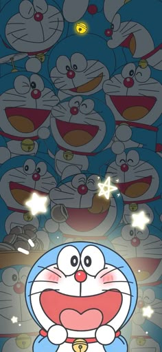

🌟 Welcome to Doraemon Universe! 🌟
🤖 Who is Doraemon?

Doraemon is a blue robotic cat 🐱 from the 22nd century 🕒. He was sent to the past by a boy named Sewashi to help his ancestor, Nobita Nobi.
Doraemon has a magical pocket 🎒 full of futuristic gadgets that solve everyday problems in fun ways. He is kind, helpful, and super cute!
📋 Doraemon's Quick Info
- Name: Doraemon
- Type: Robot Cat 🤖🐱
- Color: Blue 💙
- Birthday: September 3, 2112 🎂
- Favorite Food: Dorayaki 🍡
- Fear: Mice 🏠 (because they bit off his ears!)
- Height & Weight: 129.3 cm & 129.3 kg 📏⚖️
🧠Why Doraemon Came to the Past?
Nobita’s life was full of problems 😓. His future was sad. So, Sewashi sent Doraemon back in time ⏳ to improve Nobita's life and help him make better choices.
Now Doraemon lives with Nobita and helps him every day with cool gadgets 🛠️.
ğŸ› ï¸ Top 5 Gadgets from Doraemon’s Pocket
- 🚪 Anywhere Door – Travel anywhere instantly!
- 🚠Take-copter – A propeller that helps you fly.
- ⰠTime Machine – Travel through time via Nobita’s desk!
- 🏠 Dress-up Camera – Instantly change outfits!
- 🧽 Memorystick – Help Nobita study fast!
❓ Frequently Asked Questions (FAQ)

Q1: Was Doraemon always blue?
🅰️ No! He was yellow originally. After mice bit his ears 🏠, he cried a lot and turned blue due to sadness ğŸ˜.
Q2: What is Doraemon scared of?
🅰️ Mice! He totally panics when he sees one 😱.
Q3: Who created Doraemon?
🅰️ Fujiko F. Fujio ✍️, the famous Japanese manga artist duo.
Q4: Who will marry Nobita?
🅰️ Shizuka Minamoto 💕 – Nobita’s childhood crush and future wife!
Q5: What is Doraemon’s sister’s name?
🅰️ Dorami! She is yellow and very smart 🧠.
👨‍👩‍👧‍👦 Main Characters
- 🧒 Nobita Nobi – Lazy but kind-hearted boy
- 👧 Shizuka Minamoto – Smart and sweet girl
- 👦 Gian (Takeshi) – Strong, sings badly, and bullies friends
- 💼 Suneo Honekawa – Rich, clever, and show-off
🕓 Timeline of Doraemon’s Life
| 📅 Year |
📖 Event |
| 2112 |
Doraemon is built in a robot factory 🏠 |
| 2120 |
Loses his ears due to robot mice 🏠 |
| 2130 |
Sent back in time to help Nobita 🔠|
| 1970s |
Starts living with Nobita in Tokyo 🏠 |
🉠Fun Facts
- He has over 2,000 gadgets in his pocket 🧰
- His favorite snack is dorayaki – sweet red-bean pancake 🍡
- Doraemon has no ears but can still hear perfectly 👂
- He is Japan’s official anime ambassador 🌏
- His smile makes everyone happy 😊

© 2025 Doraemon Universe | Created with ❤️ for all fans!